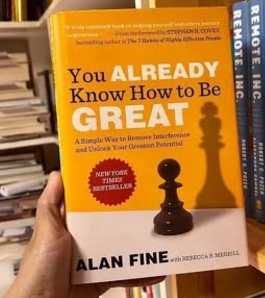
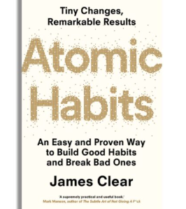

Hey there! 👋 I’m Eleazar Merino, but feel free to call me Ele. I’m a data scientist who’s always curious and loves diving into new challenges.
I recently completed my master’s degree in Data Science and Business Intelligence and had the opportunity to work as a Customer Intelligence Analyst for the multinational Tendam for a year. During that time, I honed my skills in analyzing data and creating actionable insights. But honestly, my favorite thing is learning—there’s always something new to explore!
This portfolio is a perfect example. I built it as a fun way to learn HTML and CSS, and to prove to myself (and others) that it’s never too late to pick up new skills. I’m all about growth, whether it’s digging into data, mastering new tools, or experimenting with creative ideas.
Outside of work, I’m someone who really enjoys sports and living a healthy lifestyle. I love staying active and taking care of my well-being. Nutrition is something I’m passionate about, and I have it on my list to study more in depth. So, you’ll probably see me diving into that subject in the future!
I’m also a big fan of reading. I always find time to dive into books that help me grow personally. Two of my favorite recommendations are: “You Already Know How to Be Great by Alan Fine” and “Atomic Habits by James Clear”. Both are incredibly inspiring books that motivate you to take action and improve each day.
 
Fun facts about me:
If you want to connect, feel free to reach out!